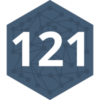

I absolutely struggled with CIS 1600 (but I love you Professor Rajiv). Discrete math is not for the faint of heart, but maybe linear algebra could go better. I think for now, the best thing to do is see how I can prepare. While Prof. Rajiv did give us two additional courses for us to prepare with, I know personally it won’t be enough.

Linear Algebra
CIS 1210 is a course about algorithms and data structures using Java, introducing concepts about complexity and runtime, as well as structures like stacks, queues, maps, trees, and graphs. It’s going to be hard, like really hard. So, I’m going to get a head start on the concepts by looking at other resources. With the help of Gemini, here is a list of resources I can use to get ahead of the class.
Focusing on Key Areas and Concepts
I gave Gemini the prompt: you and I are trying to prepare for CIS 1210 at UPenn, what resources can I use to get a head start and understand the concepts before the semester starts?. Their resopnse was as follows:
That is a great idea! CIS 1210 (Programming Languages and Techniques II / Data Structures and Algorithms) is a crucial course, and getting a head start will definitely pay off.
Based on the course description and typical curriculum, here are the key areas to focus on and the resources you can use for preparation.
🔑 Key Concepts to Master Before CIS 1210
CIS 1210 primarily focuses on Data Structures and Algorithms and is taught using Java. The prerequisites are typically CIS 1200 (Programming Languages and Techniques I) and CIS 1600 (Mathematical Foundations of Computer Science).
1. Java Programming (Review/Advance CIS 1200)
- Object-Oriented Programming (OOP) in Java: Ensure you are very comfortable with classes, objects, interfaces, inheritance, polymorphism, and abstraction.
- Core Java Constructs: Review basic data types, control flow, loops, arrays, and standard Java library classes. The course materials mention using the
java.utilpackage frequently. - Testing: The course places a strong emphasis on proper unit testing, often using JUnit. Practice writing comprehensive unit tests for your code.
- Style: Review good Java coding practices (e.g., using getters/setters, commenting, DRY principle). The course provides a specific Java Style Guide.
2. Mathematical Foundations (Review CIS 1600)
- Asymptotic Analysis / Big O Notation: This is essential for analyzing algorithm efficiency. Understand Big-O (\(O\)), Big-Omega (\(\Omega\)), and Big-Theta (\(\Theta\)) notation, and practice calculating the runtime complexity of various code snippets and algorithms.
- Recurrence Relations: Learn how to set up and solve recurrence relations (e.g., using the Master Theorem) for analyzing recursive algorithms like Merge Sort and Quick Sort.
- Proof Techniques: Review mathematical proof techniques, particularly Proof by Induction, as you will likely need to prove the correctness or complexity of algorithms and data structures.
3. Algorithms and Data Structures Fundamentals (Core CIS 1210 Material)
This is the main content of the course. Getting a basic understanding of these topics will be the most valuable head start.
- Basic Structures: Stacks, Queues, Linked Lists, Hash Tables/Maps.
- Sorting Algorithms: Insertion Sort, Merge Sort, Quick Sort, Heap Sort.
- Trees: Binary Search Trees (BSTs), Balanced Trees (like AVL Trees).
- Graphs: Representation (Adjacency List/Matrix), Basic Traversals (Breadth-First Search/BFS, Depth-First Search/DFS).
- Algorithm Design Techniques: Divide and Conquer, Greedy Algorithms (e.g., Huffman Coding, Minimum Spanning Trees, Shortest Path/Dijkstra’s).
📚 Recommended Resources
1. UPenn-Specific Course Materials
- Past CIS 1210 Course Websites: Search for the course website from a recent semester (e.g., “CIS 1210 Fall 2024 UPenn”). Professors often keep their sites public. These sites usually contain:
- Lecture Notes/Slides: Review the Course Textbook/Lecture Notes provided by the staff, if available.
- Recitation Guides: These often contain review material for prerequisites like CIS 1200 and CIS 1600.
- Homeworks and Exams: Looking at the types of problems will give you the best sense of what’s expected.
- Supplemental Textbook:
- Introduction to Algorithms (CLRS), 3rd edition by Cormen, Leiserson, Rivest, and Stein. This is a classic and very comprehensive algorithms textbook, which the UPenn materials explicitly mention as a Supplemental Textbook. You can often get a free copy through the Penn Libraries.
2. General Data Structures and Algorithms Resources (Focusing on Java)
- University-Level Courses (Online):
- MIT OpenCourseWare - Introduction to Algorithms (6.006): While not Java-focused, this is an excellent, free resource for the theory and is often cited as a top-tier course.
- Coursera Specialization - Data Structures and Algorithms (UC San Diego): This specialization is highly rated and focuses on the core topics you will cover.
- Books for Practice/Application (Java Focus):
- Data Structures and Algorithms Made Easy by Narasimha Karumanchi (Good for seeing implementations).
- Data Structures and Algorithms in Java by Robert Lafore or by Michael T. Goodrich (Often used as standard introductory texts).
- Practice Platforms (for Coding/Implementation):
- LeetCode or HackerRank: Start with the “Easy” problems focusing on implementing basic data structures (Arrays, Linked Lists, Stacks, Queues, Hash Maps) and standard algorithms (Sorting, BFS/DFS). This builds crucial hands-on experience.
- GeeksforGeeks: Excellent resource for theory, explanations, and Java code snippets for nearly every algorithm and data structure.
3. Java and Testing Review
- Oracle Java Tutorials: For a refresher on core Java syntax and OOP concepts.
- Google Java Style Guide: The CIS 1210 course mentions adhering to this style guide (with a few exceptions like indenting with 4 spaces), so reviewing it is smart.
A very comprehensive guide
This is a lot more than I was expecting! But that probably shows just how much work I need to put into this course and how difficult it will be. I know over break I’m going to look at these because it uses a lot of the topics from CIS 1600, a class I struggle(d) with a lot. And maybe, just maybe, I will actually understand something for once.